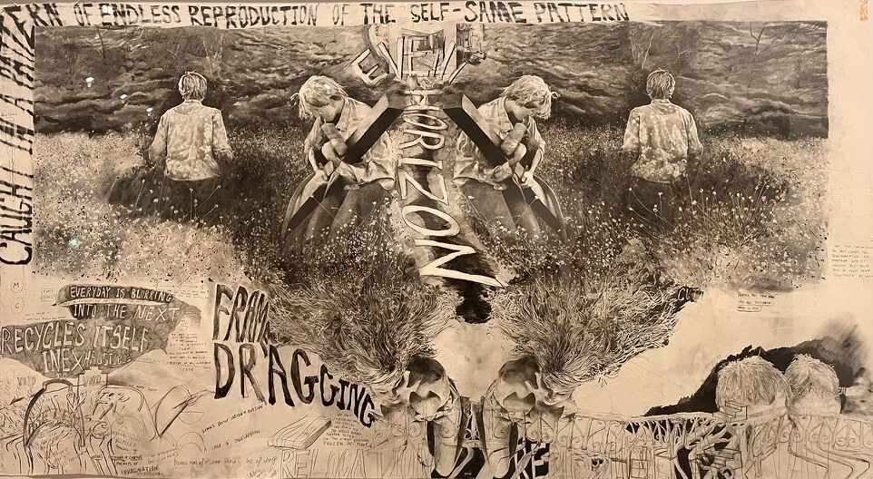
Kaari Upson, Event Horizon, 2017 · graphite, ink and gesso on paper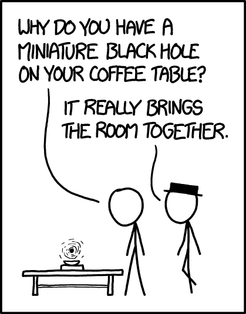
xkcd 1680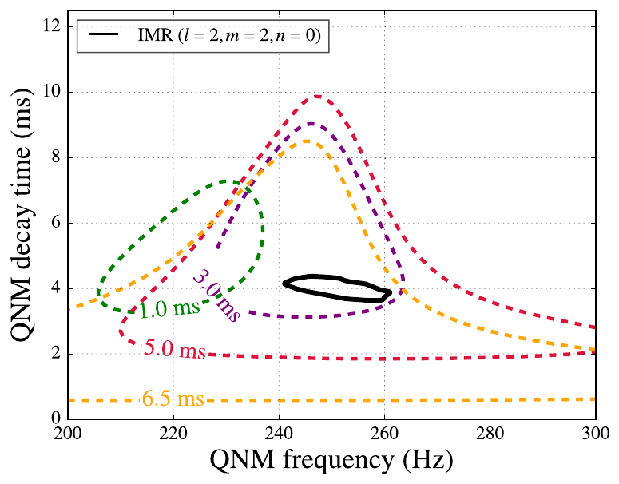
LVK, PRL 116 221101 (1602.03841)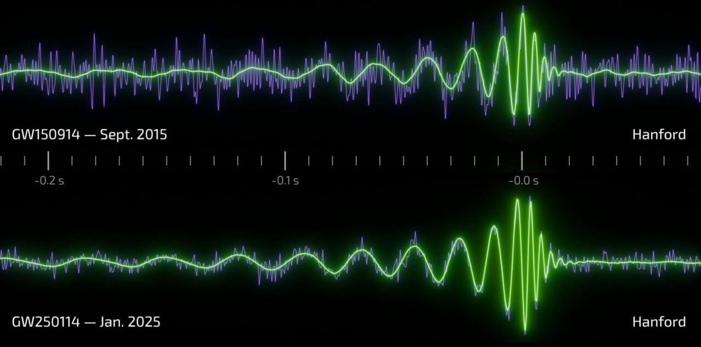
LIGO / J. Tissino (GSSI) / R. Hurt (Caltech-IPAC)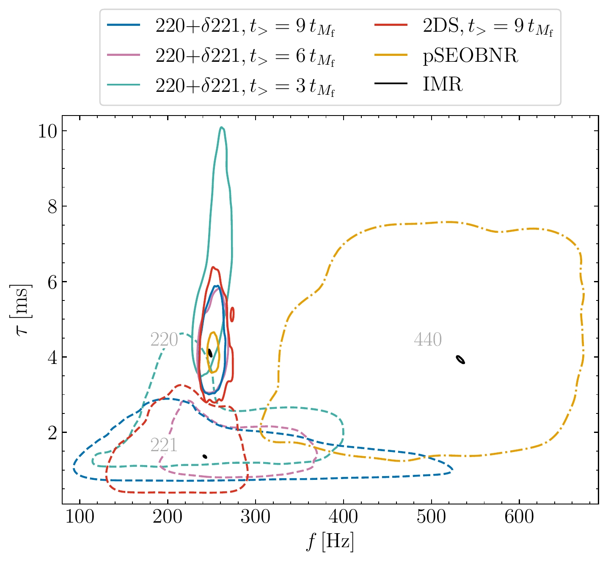
LVK (2509.08099)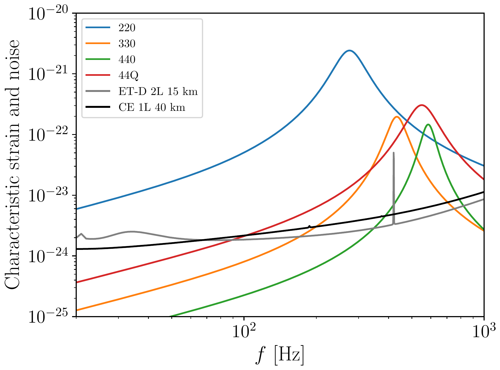
Lagos, Andrade, Rafecas-Ventosa & Hui (2411.02264): a GW150914-like event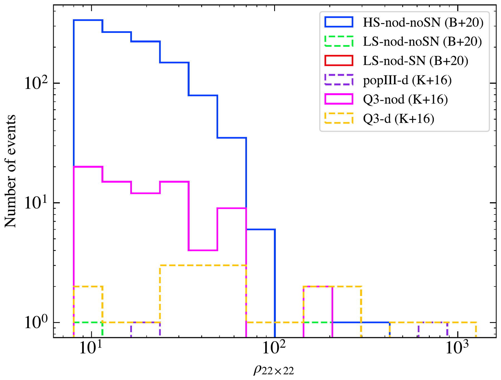
Yi+ (2403.09767): LISA, 4 years, events with a detectable 22×22 mode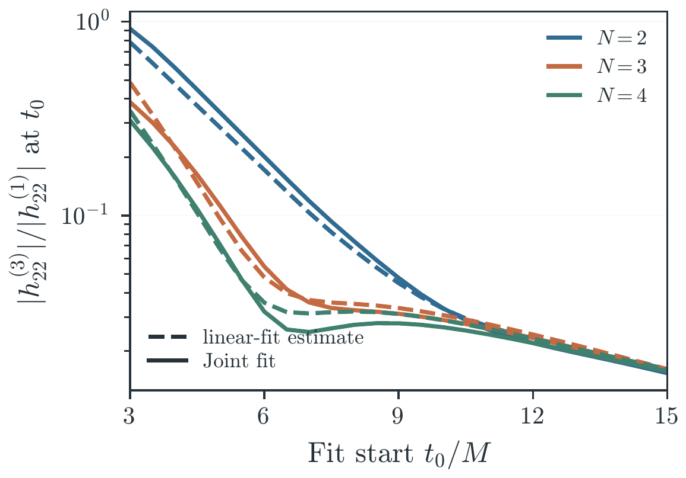
Khera & Yang (2610.20547), last week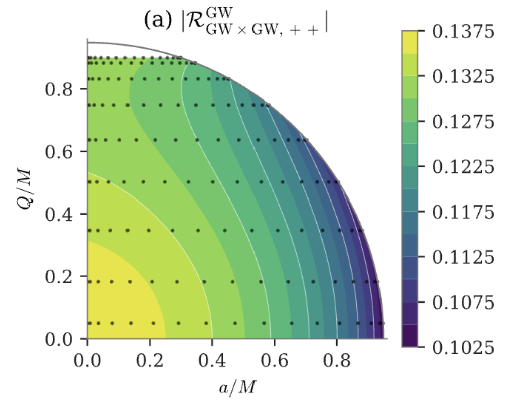
ongoing work: |ℛ| over spin and charge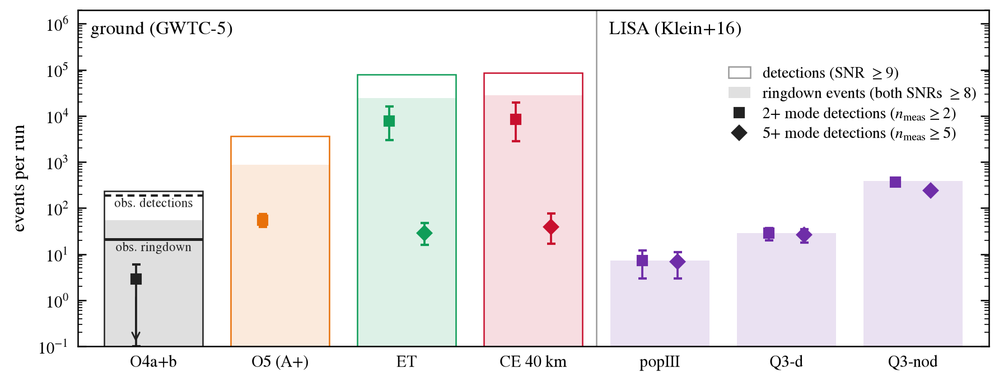
Redondo-Yuste & Yi (to appear)